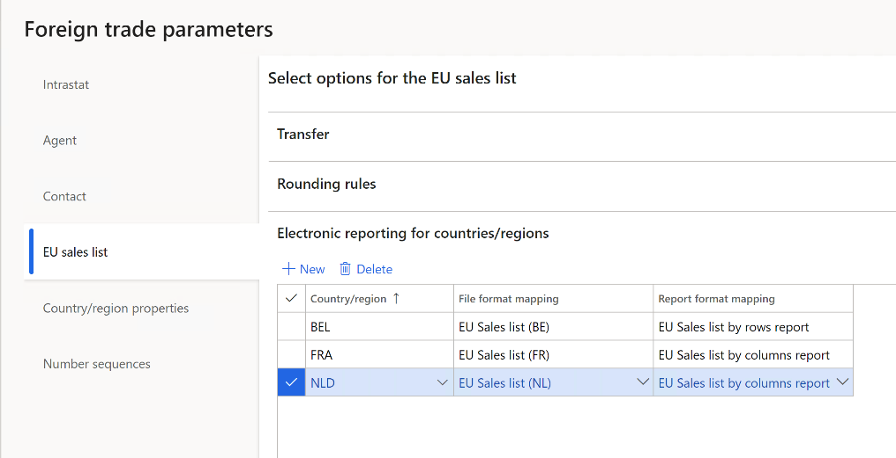
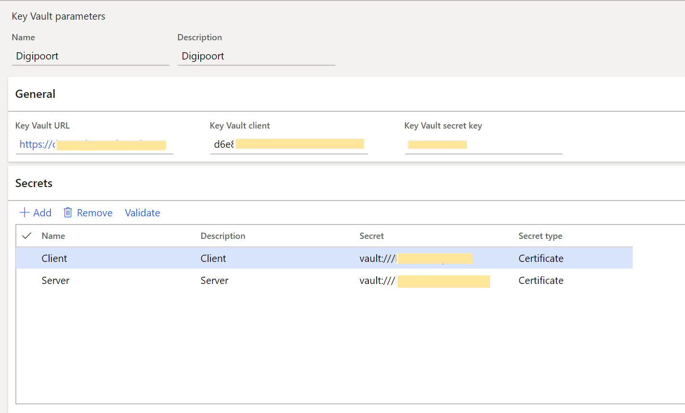
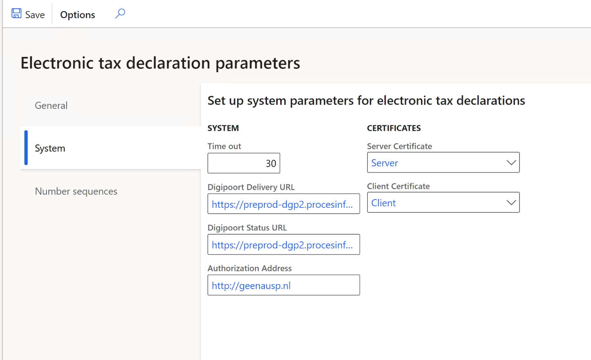
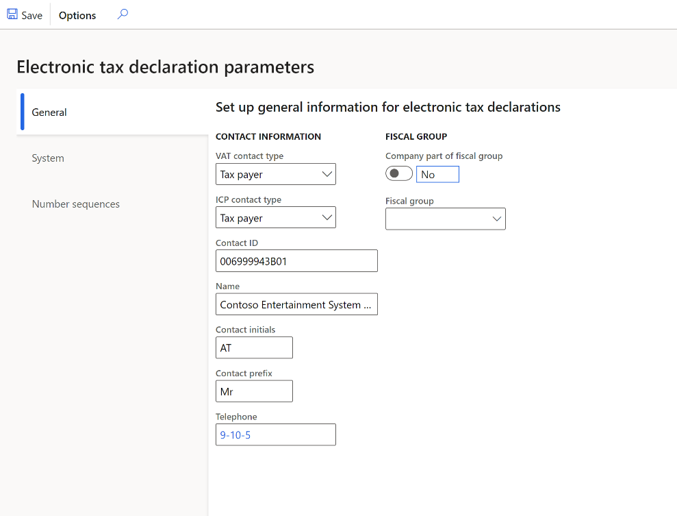
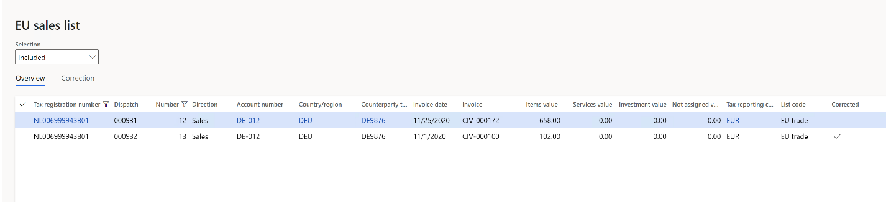
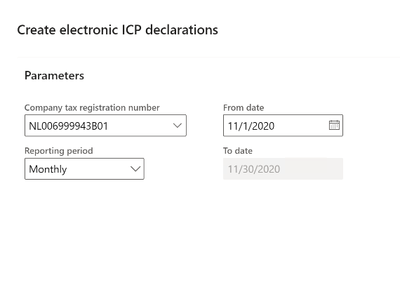
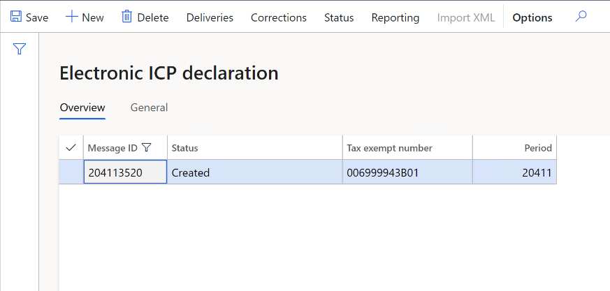
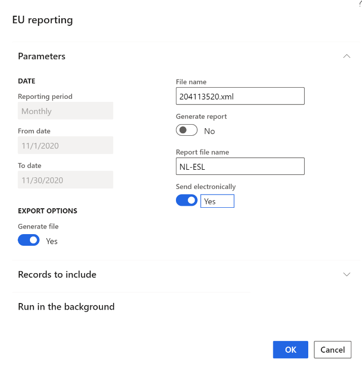

EU sales list for Netherlands
Important
Some or all of the functionality noted in this topic is available as part of a preview release. The content and the functionality are subject to change. For more information about preview releases, see Service update availability.
You can generate a European Union (EU) sales list for the Netherlands in XML format that follows NL SBR taxonomies description. Taxonomies are updated by the authority each year. For example, in 2021 the taxonomy NT15 is applicable.
You can also preview the EU sales list report in Microsoft Excel format. Two formats are available to select: EU sales list by rows report or EU sales list by columns report.
As a prerequisite, you should learn about EU sales list reporting and create all the necessary settings described in EU Sales list reporting.
Set up EU sales list for Netherlands
Set up XML namespaces for the EU sales list in XML
To set up XML namespaces for the EU sales list in XML, follow these steps:
Go to Workspaces > Electronic reporting, and import version 1.10 or higher of the format, EU Sales list (NL). For more information, see Download ER configurations from the Global repository of Configuration service.
Select Configurations > Application specific parameters setup.
On the Lookups FastTab, select XMLNamespaces.
On the Conditions FastTab, define the path to the XSD schema and the paths to the schema instances, SchemaInstanceData and SchemaInstanceTuples.
Name Lookup result XSDSchema http://www.nltaxonomie.nl/nt15/bd/20201209/entrypoints/bd-rpt-icp-opgaaf-2021.xsd SchemaInstanceData http://www.nltaxonomie.nl/nt15/bd/20201209/dictionary/bd-data SchemaInstanceTuples http://www.nltaxonomie.nl/nt15/bd/20201209/dictionary/bd-tuples
For more information about how to get the values from official documentation, see How-to get XSD schema and namespaces for the Dutch taxonomy.
Set up EU sales list reporting formats
To set up and generate the Dutch EU sales list for Multiple VAT registrations, go to the Feature management workspace and enable the feature, Dutch ICP declaration.
To set up EU sales list reporting formats, follow these steps:
Go to Tax > Setup > Foreign trade > Foreign trade parameters.
On the EU sales list tab, in the File format mapping field, select the ER format EU sales list (NL) that you imported.
In the Report format mapping field, select either EU Sales list by rows report or EU sales list by columns report.
For legal entities with Multiple VAT registrations, on the EU sales list tab, on the Electronic reporting for countries/regions FastTab, on the NLD country/region line, select the ER format EU sales list (NL) that you imported.

Set up electronic transmission of tax declarations to Digipoort
Digipoort is the service used to transmit declarations to the Dutch government. Digipoort works as an electronic post office in that it receives a message, checks the message, and then confirms receipt of the message.
Set up Azure Key Vault for certificate storage
To set up Azure Key Vault for certificate storage, follow these steps:
Go to System administration > Setup > System parameters.
On the General tab, set the Use advanced certificate store option to Yes.
Upload the certificate to KeyVault.
Go to System administration > Setup > Key Vault parameters.
Select New and set the Name and Description fields as Digipoort.
On the General FastTab, set the following fields:
- Key Vault URL: Enter the default Azure Key Vault URL.
- Key Vault client: Enter the interactive client ID of the Azure Active Directory (Azure AD) application that is associated with Key Vault storage for authentication.
- Key Vault secret key: Enter a secret key that is associated with the Azure AD application that's used for authentication to Key Vault storage.
On the Secrets FastTab, select Add, and create lines for Key Vault secrets for the Digipoort server and client certificates.

For more information about how to set up Key Vault parameters, see Set up the Azure Key Vault client.
Set up electronic tax declaration parameters
To set up electronic tax declaration parameters, follow these steps:
Go to Tax > Setup > Sales tax > Electronic tax declaration parameters.
For legal entities with Multiple VAT registrations, go to Tax > Setup > Foreign trade > Dutch electronic tax declaration parameters.
On the System tab, set the following fields:
- Digipoort Delivery URL: Enter the destination URL for the Digipoort service. For example, enter https://preprod-dgp2.procesinfrastructuur.nl/wus/2.0/aanleverservice/1.2".
- Digipoort Status URL: Enter the URL for the message statuses. For example, enter https://preprod-dgp2.procesinfrastructuur.nl/wus/2.0/statusinformatieservice/1.2.
- Authorization Address: Enter the URL for authorization. For example, enter http://geenausp.nl.
- Server Certificate: Select the line that you created for the Key Vault secret for the Digipoort server certificate.
- Client Certificate: Select the line that you created for the Key Vault secret for the Digipoort client certificate.

Set up the Dutch EU sales list transmission to Digipoort
Set up Dutch electronic tax declaration parameters
To set up Dutch electronic tax declaration parameters, follow these steps:
Go to Tax > Setup > Sales tax > Electronic tax declaration parameters.
For legal entities with Multiple VAT registrations, go to Tax > Setup > Foreign trade > Dutch electronic tax declaration parameters.
On the General tab, in the ICP contact type field, select Taxpayer or Agent.
Select information in the Contact ID, Name, Contact initials, Contact prefix, and Telephone fields.
Set the Company part of fiscal group option to Yes if this setting is appropriate, and then, in the Fiscal group field, select the tax exempt number of the fiscal group.

On the Number sequences tab, in the Number sequence code field, select a number sequence code for the Electronic ICP declaration ID and Error ID references.
Generate the Dutch EU sales list and send to Digipoort
Transfer transactions and preview files
To transfer transactions and preview files, follow these steps:
Go to Tax > Declarations > Foreign trade > EU sales list. Transfer the EU sales list transactions for the Netherlands to the EU sales list.
Mark any corrected lines as Corrected.

For more information about how to work with the EU sales list journal, see EU Sales list reporting.
For more information about reporting of legal entities with multiple VAT registrations, see Reporting for Multiple VAT registrations.
Select Reporting to preview the EU sales list files. In the EU reporting dialog box, set the following parameters:
- In the Reporting period field, select Monthly or Quarterly.
- In the From date field, select the first date of the reporting period.
- Set Generate file to Yes to generate an XML file.
- Set Generate report to Yes to generate a Microsoft Excel report.
Create ICP declaration and send to Digipoort
To create ICP declaration and send to Digipoort, follow these steps:
Go to Tax > Declarations > Foreign trade > Dutch electronic ICP declaration.
Select New, and in the Create electronic ICP declaration dialog box, select Company tax registration number.
Enter or select a value in the From date field, and then select the Reporting period.

Select OK. The electronic message is created.

Select Deliveries to review the lines of the EU sales list that are transferred to the message from the EU sales list page.
Select Corrections to review the correction lines of the EU sales list that are transferred to the message from EU sales list page.
Select Reporting to generate an XML file of the EU sales list and set report generation parameters in the EU reporting dialog box.
Set Send electronically to Yes to send the generated XML file to Digipoort.

Select OK and refresh the page. The message status is changed to Sent.
Select Import XML to import the response from Digipoort. The message status is changed to Acknowledgement.
Get XSD schema and namespaces for the Dutch taxonomy
Dutch taxonomies change once a year. Check for the availability of a new taxonomy to get the new path to the XSD schema and new namespaces. Update application specific parameters accordingly.
- Open Documentatie Nederlandse Taxonomie | Standard Business Reporting (sbr-nl.nl)
- In the Organisatie field, select Belastingdienst.
- In the Documenten field, select for example Omzetbelasting 2021 to get taxonomy for 2021 year.
- Select Filter resultaten.
- Locate the document with description of changes, for example for changes between NT14 and NT15 taxonomies, and download the NT15_BD_20201209 Versioning_NT14_20191211_to_NT15_20201209 zip archive. Unzip the file.
EU sales list
To view the changes in EU sales list, complete the following steps.
- Open the file, Versioning_rpt-from_NT14_20191211_to_NT15_20201209-bd-rpt-icp-opgaaf-2021.html to view the changes in EU sales list.
- In the file, under Schema referenties, you can see xsd schema names for taxonomies NT14 and NT15. Take the value for entering to XSDSchema lookup result. Find more details about application specific parameters for EU sales list format in the section Set up XML namespaces for the EU sales list in XML above
- In the file, under the Namespaces table, you can see the line: bd-i=http://www.nltaxonomie.nl/nt15/bd/20201209/dictionary/bd-data. Take this value for entering to SchemaInstanceData lookup result.
- In the file, under the Namespaces table, you can see the line: bd-t= http://www.nltaxonomie.nl/nt15/bd/20201209/dictionary/bd-tuples. Take this value for entering to SchemaInstanceTuples lookup result.
VAT declaration
To view the changes in VAT declaration, follow these steps:
- Open the file, Versioning_rpt-from_NT14_20191211_to_NT15_20201209-bd-rpt-ob-aangifte-2021.html to see the changes in VAT declaration.
- In the file, under Schema referenties, you can see xsd schema names for taxonomies NT14 and NT15. Take the name of xsd schema for entering to XSDSchema lookup result. Find more details about application specific parameters for VAT declaration format in VAT declaration for Netherlands topic in Set up XSD schema and namespaces section.
- In the file, under the Namespaces table, you can see the line: bd-i=http://www.nltaxonomie.nl/nt15/bd/20201209/dictionary/bd-data. Take this value for entering to SchemaInstanceData lookup result.